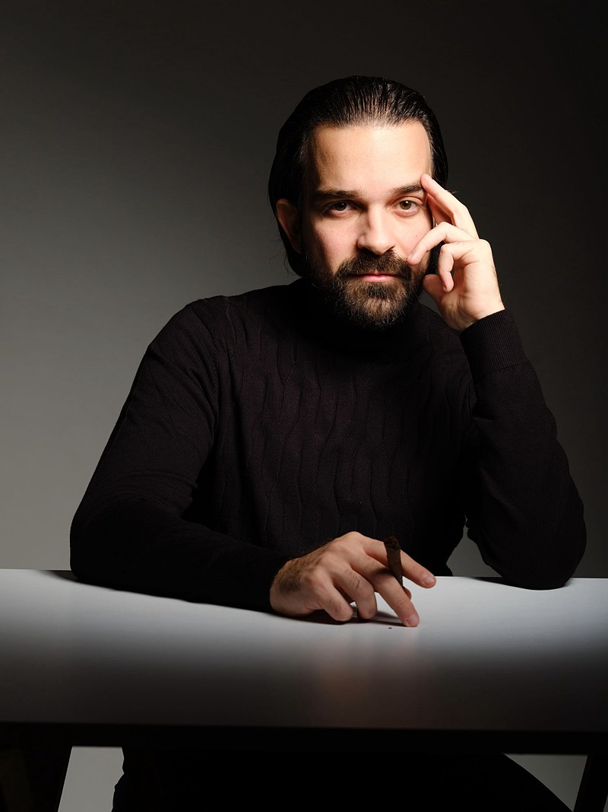
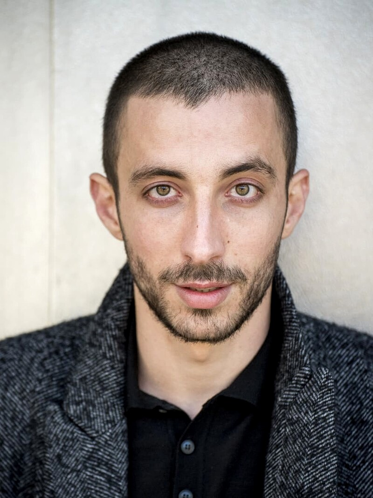
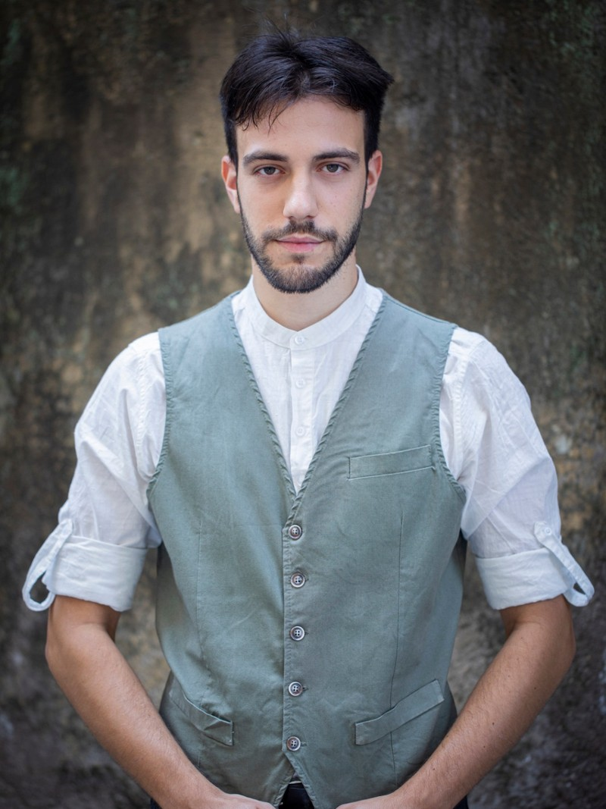
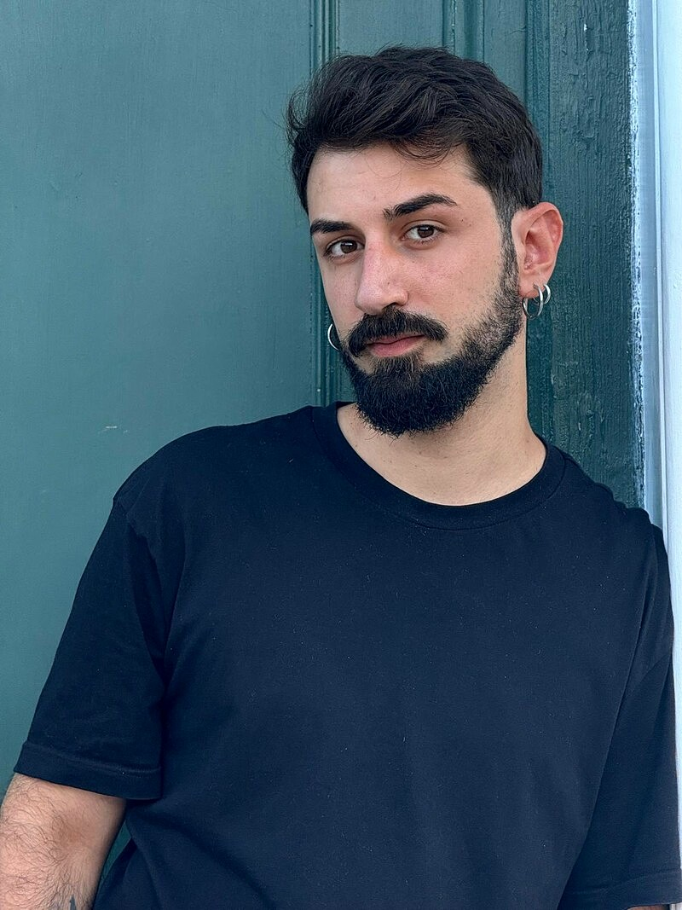
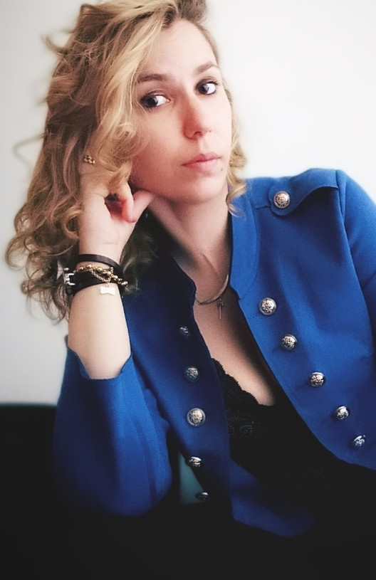
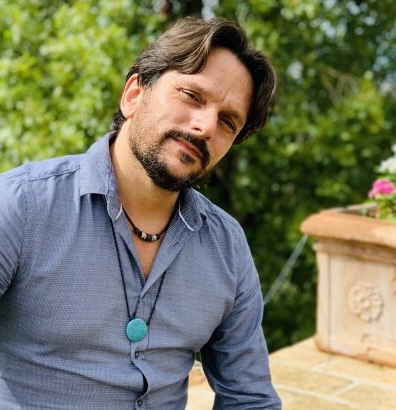

Il corpo docente
Docenti
Attori, registi, maestri e studiosi uniti da una visione comune:
il teatro classico come pratica viva.

Andrea Saverio Puglisi
Direzione Artistica · Maschera classica
Leggi la bio →Elena Rossetto
Voce & Doppiaggio
Leggi la bio →Rachele Sarti
Recitazione classica & Verso
Leggi la bio →
Francesco Rizzo
Corpo & Spazio scenico
Leggi la bio →Gaetano Marsico
Recitazione cinematografica
Leggi la bio →
Massimiliano Viola
Tecniche teatrali & Teatro di figura
Leggi la bio →
Matteo Maria Mascetta
Mimo & Improvvisazione
Leggi la bio →
Caterina Pentericci
Scherma scenica
Leggi la bio →
Giampiero Marchi
Latino & Greco antico
Leggi la bio →
Audizioni triennale in apertura
Studia con loro.
Audizioni in apertura per l'ammissione al triennio. Iscriviti alla newsletter per ricevere il bando.